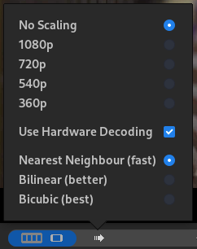

Preview performance and quality

Preview controls menu in monitor controls area.
Quality, performance and smoothness of preview playback can be controlled by selecting Scaling and Interpolation options.
With better image quality less filters can used before issues with playback smoothness start occurring. Compomising on image quality offers better performing playback and more filters can be used without issues.
Playback performance can also be improved by emplying GPU decoding, if available in the system.
Preview Interpolation
Preview interpolation options:
- Nearest Neighbour - fastest, some jagged edges on image maybe visible.
- Bilinear - better image quality, no image artifacts should be visible.
- Bilcubic - best image quality, but worst performance.
Preview Scaling
Preview scaling is feature in which rendering output is executed at a smaller resolution then the full resolution of the Project Profile of the current Project.
Selecting options with smaller image resolution results in lower image quality but better playback performance.
Preview scaling options:
- No Scaling
- 1080p
- 720p
- 540p
- 360p
Combining preview scaling with proxy editing using proxy clips of the exact same resolution results in improved playback performace since less image scaling happends during rendering output.
GPU Decoding
Many modern systems are equipped with GPU hardware that can used to decode video during playback. This can improve playback performance and allow for having better image quality of active filters with smoothness issues.
Available GPU decoding in your system
- Select Help > Runtime Environment from application menu.
- Video formats that can be decoded in GPU are listed on line GPU Decoding in section GPU.
Enabling GPU decoding
- Check View > Enable Harware Decoding checkbox in application menu.
- Alternatively check Enable Harware Decoding checkbox in Preview Options pop-up menu.
Available GPU decoding
Depending on system configuration the following video formats may be GPU decodable.VAAPI based decoding is available on systems with AMD or Intel GPU hardware, CUDA based decoding is available on systems with NVIDIA GPU hardware.
- VAAPI
- h264
- hevc
- vp9
- av1
- CUDA
- h264